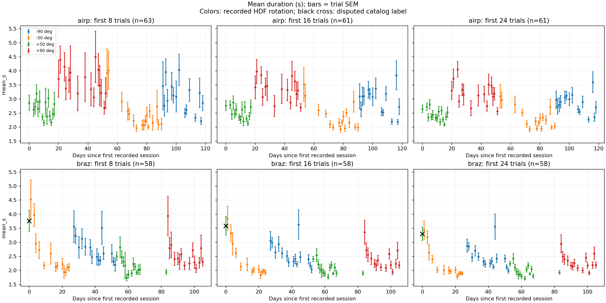
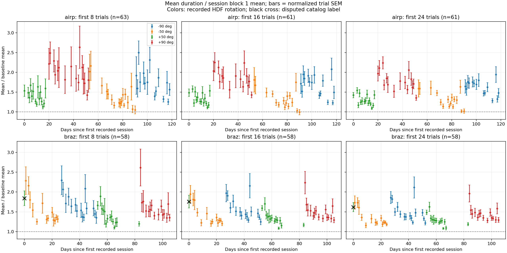
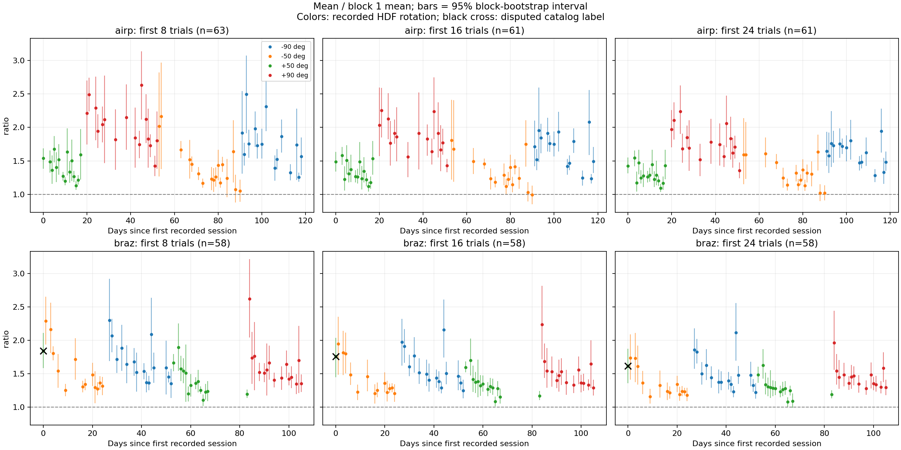
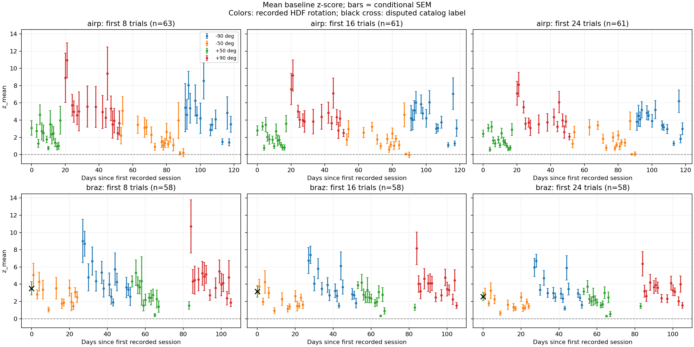
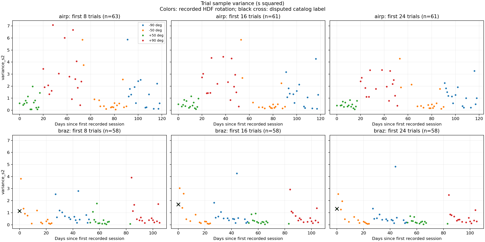
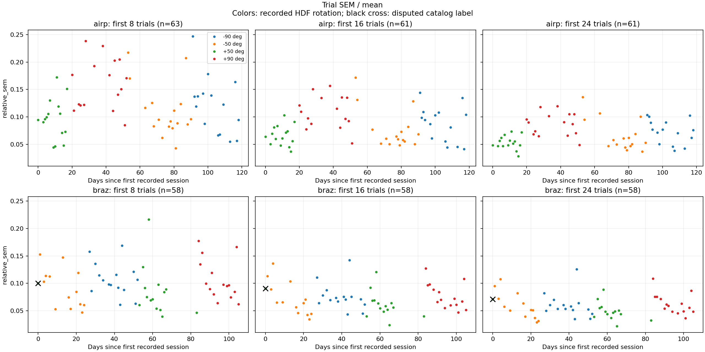
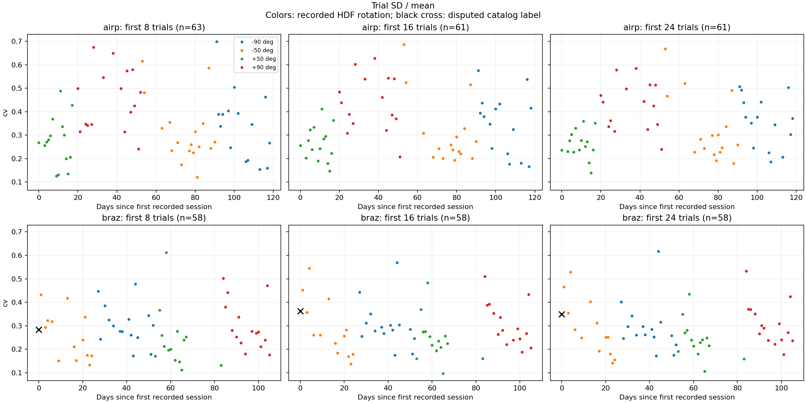

Compare 8, 16 and 24 original rewarded trials in block 2. Baseline: last 128 valid, unperturbed, non-clamped successes in block 1 (minimum 64, all eight directions). Ratios above 1 and z-scores above 0 indicate slower performance than the session baseline.
| monkey | window_trials | n_sessions | median_relative_sem | median_cv | median_ratio |
|---|---|---|---|---|---|
| airp | 8 | 61 | 0.1116 | 0.3157 | 1.5940 |
| airp | 16 | 61 | 0.0803 | 0.3212 | 1.4938 |
| airp | 24 | 61 | 0.0661 | 0.3239 | 1.4807 |
| braz | 8 | 58 | 0.0936 | 0.2648 | 1.5170 |
| braz | 16 | 58 | 0.0669 | 0.2676 | 1.3928 |
| braz | 24 | 58 | 0.0534 | 0.2615 | 1.3452 |
Trial SEM is descriptive: adaptation, target differences and dependence contribute to variability. Increasing the window changes the adaptation period as well as the number of observations. These checks cannot establish that trial count causes an animal difference.







Normalized mean bars are trial SEM divided by the same session baseline mean. They condition on the estimated baseline; the separate ratio plot also includes baseline uncertainty.
Ratio bars show 95% percentile intervals using independent circular four-trial block resamples of early and baseline trials. Eight-trial block sensitivity is in the CSV. At an eight-trial window, eight-trial blocks cannot estimate numerator uncertainty. Z-score SEM holds the estimated baseline mean and SD fixed. Baseline means pool trials; direction counts are exported to reveal unequal target representation.
Colors identify HDF rotations; the black cross marks the disputed first braz session. Calendar trend CSVs exclude it except in an explicit sensitivity model. Trends are exploratory and assume a common slope when adjusting for rotations that vary with chronology.
The metadata inventory covers all HDF nodes, table fields, and relevant attributes. The perturbation table samples recorded attempt anchors, not every task row. A binary pert code does not identify five perturbation types. Local filename searches cover the repository data directory; external behavior logs remain unverified.
Session data · Exploratory slopes and intervals · HDF inventory · Full settings